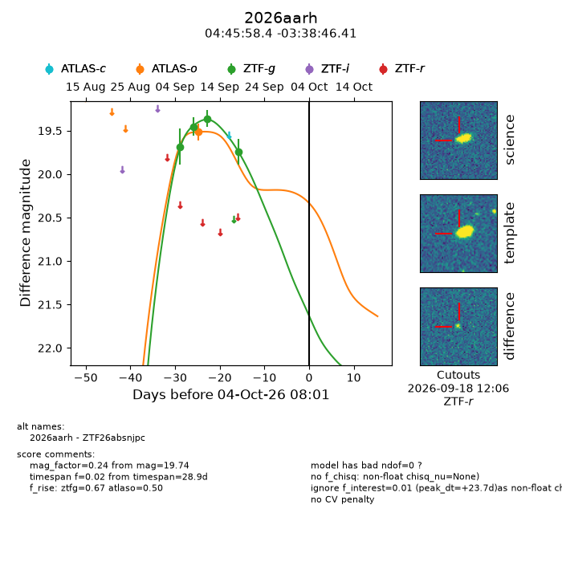
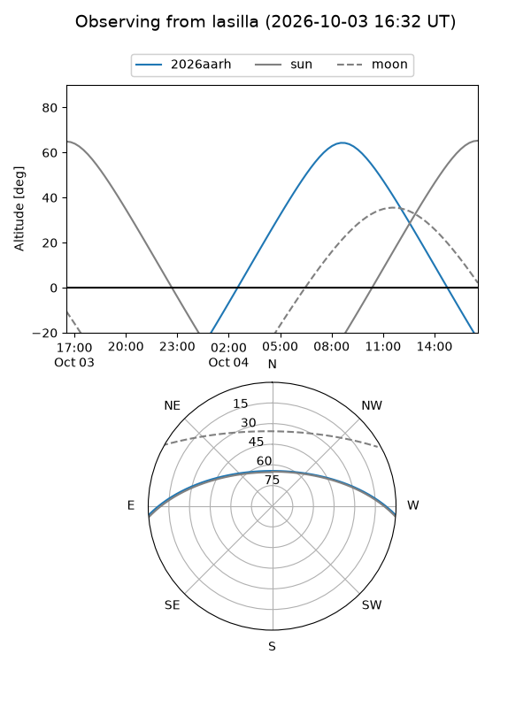
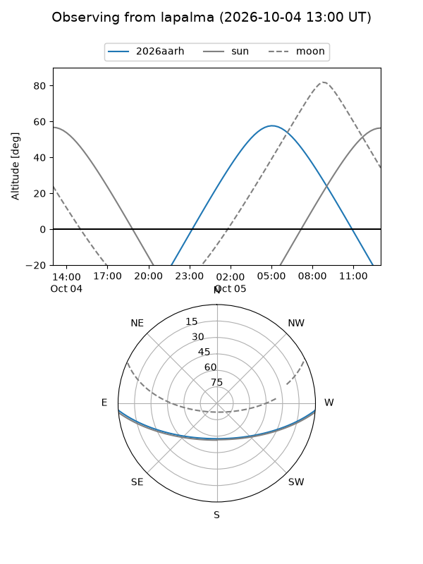
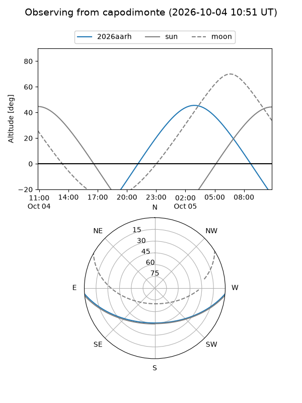
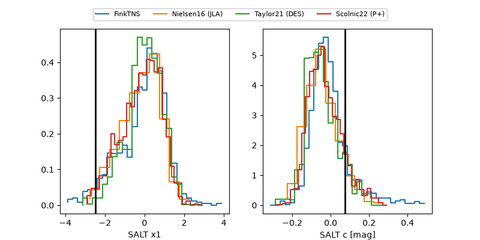

2026aarh
Target 2026aarh at 2026-10-04 18:38
Aliases and brokers:
FINK-ZTF: ztf.fink-portal.org/ZTF26absnjpc
Lasair-ZTF: lasair-ztf.lsst.ac.uk/objects/ZTF26absnjpc
ALeRCE-ZTF: alerce.online/object/ZTF26absnjpc
YSE-PZ: ziggy.ucolick.org/yse/transient_detail/2026aarh
TNS name: wis-tns.org/object/2026aarh
Direct TNS query: direct search
alt names
ZTF26absnjpc (ztf,fink_ztf)
2026aarh (tns,yse)
Coordinates:
equatorial (ra, dec) = 71.4933,-3.64622
equatorial (HMS+DMS) = 04:45:58.39,-03:38:46.41
galactic (l, b) = (200.9875,-29.42639)
Flags:
TNS type: nan
peak dt: +24.1
Photometry:
last atlaso=19.51, ztfg=19.74
1 atlaso, 4 ztfg detections
Lightcurve

Visibility



Additional plots
